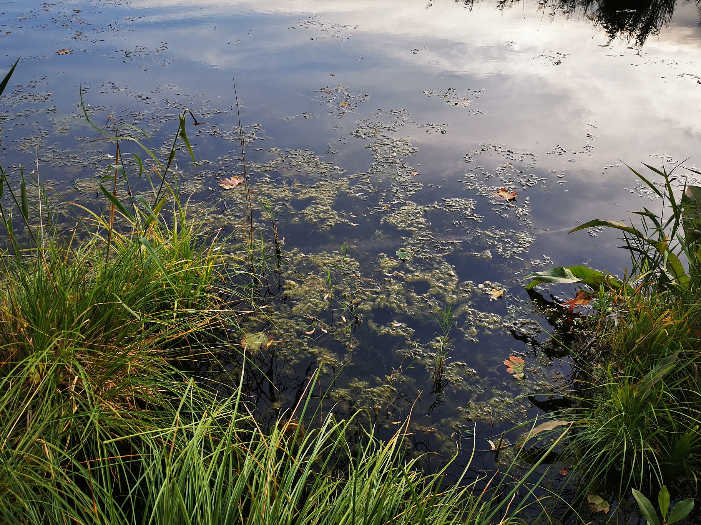

Jeśli chcemy zachować i cieszyć się tak bogatymi przyrodniczo Szachtami przez kolejne dziesięciolecia, wymagane są działania na polu ochrony przyrody. Poniżej postaram się przybliżyć niektóre zagrożenia, przed którymi dziś stoją Szachty, a także rozwiązania, które mogą zostać wdrożone, posiłkując się fragmentami publikacji naukowej.
'Zlewnia Junikowskiego Strumienia reprezentuje typ małej zlewni nizinnej, w której młodoglacjalny krajobraz modelowany przez procesy rzeczne podlega obecnie różnokierunkowej presji w wyniku działalności człowieka. Istotne zmiany w rzeźbie terenu, glebach, stosunkach wodnych oraz w strukturze pokrycia terenu i użytkowaniu ziemi w środkowej części zlewni spowodowane zostały m.in. eksploatacją surowców ceramicznych, której efektem są Szachty – kompleks wyrobisk wypełnionych wodą wraz z otaczającymi ekosystemami. Współcześnie największe zmiany w funkcjonowaniu środowiska przyrodniczego wiążą się z procesami urbanizacyjnymi, które prowadzą do rozszerzania się obszarów zabudowy mieszkaniowej i przemysłowo-usługowej oraz zwiększenia gęstości sieci komunikacyjnej. Efektem tej różnokierunkowej działalności są przekształcenia w rzeźbie terenu, rosnąca powierzchnia pokryta nieprzepuszczalną warstwą sztucznych materiałów, zmiany lokalnego klimatu, uregulowane i oszpecone przez betonowe umocnienia brzegi koryt cieków, powodzie miejskie, zły stan jakości wód powierzchniowych, niekontrolowane składowiska odpadów i niszczenie naturalnych siedlisk. Jednocześnie występujące na obszarze zlewni formy rzeźby polodowcowej, surowce mineralne oraz pozostałości działalności wydobywczej w postaci zbiorników poeksploatacyjnych decydują o jej georóżnorodności. Natomiast tereny zalesione, łąkowe i podmokłe (np. Lasek Marceliński, Szachty) zlokalizowane w dolinie Junikowskiego Strumienia wciąż charakteryzują się znaczącą bioróżnorodnością. Przywołane cechy decydują o wysokich walorach przyrodniczych i krajobrazowych zlewni, a zarazem są istotne dla dostarczanych usług ekosystemowych. Środowisko geograficzne tego obszaru można zatem traktować jako kapitał naturalny, który historycznie i obecnie kształtuje jakość życia jego mieszkańców.'
Wstęp to fragment rozdziału 23 autorstwa Dawida Abramowicza, Małgorzaty Mazurek, Renaty Graf, Małgorzaty Stępniewskiej, Doroty Wrońskiej-Pilarek pt. "Współczesne i przyszłe wyzwania w zlewni Junikowskiego Strumienia" (s. 419) opublikowanego w książce pt. Środowisko geograficzne zlewni Junikowskiego Strumienia pod red. Małgorzaty Mazurek i Dawida Abramowicza (Bogucki Wydawnictwo Naukowe, Poznań, 2022).
 W ostatnim czasie Szachty stały się miejscem bardziej popularnym, głównie od momentu wybudowania wiezy widokowej, pomostu oraz rozbudowania
ścieżek asfaltowych wraz z infrastrukturą(ławki, pojemniki na śmieci), co zmieniło charakter tego miejsca z dzikiego i rzadko
odwiedzanego, na bardziej popularne, a nawet zatłoczone w weekendy. Można różnie oceniać tą zmianę, jednak Szachty dalej posiadają ogromną
wartość przyrodniczą i rekreacyjną, co czyni je pożądanym miejscem zarówno na niedzielny wypad, jak i miejsce do zamieszkania.
W 2021 lokalnej społeczności udało się powstrzymać plany miasta, aby zabudowania mieszkalne docierały aż pod
wieżę widokową. Niestety od strony północno wschodniej - Świerczewa - zabudowa postępuje. Zrozumiała jest chęć mieszkania przy tak
atrakcyjnym terenie. Jednak ważne jest, aby teren Szacht i wokół nich pozostał jak najbardziej dziki oraz aby wszelkie plany dalszego
zagospodarowania terenu pod budynki mieszkalne nie postępowały. Były czynione wysiłki, aby przywrócić tym terenom statusu użytków
ekologicznych(w 2001roku z powodu zmianów planów zagospodarowania utraciły ten status), jednak do dnia dzisiejszego ten cel nie został
osiągnięty, dlatego Szachty są nadal zagrożone. Ogromna usługa ekologiczna, jaką pełnią Szachty nie podlega dyskusji(obecnie odchodzi
się od traktowania układów przyrodniczych jako wartościowych samych w sobie(naturocentryzm), na rzecz uznania, że trzeba je chronić z
powodu pożytków dostarczanych dla człowieka(M. Stępniewska, D. Pieczka)). Szachty mają swoją wartość nie tylko dzięki stawom i alejkom,
ale także dzięki otaczającym je lasom i łąkom.
To miejsca, gdzie mogą się schronić i zamieszkać niezliczone gatunki zwierząt oraz owadów, które nie mogłyby tego zrobić wśród często
odwiedzanych alejek czy samych stawów. Zwierzęta i owady potrzebują bujnej roślinności i przestrzeni, aby móc gniazdować, czy budować swoje siedziska.
A bujna natura zwiększa wartość rekreacyjną terenu. Dlatego tak ważne jest, aby nie tylko Szachty pozostały dzikie, ale również tereny leśne i łąki od strony
Świerczewa oraz południowego zachodu(za wieżą). Kilka dzików, małe stadko saren, a także bobrów i niezliczone inne gatunki owadów i zwierząt upodobało sobie to miejsce. Ogromne znaczenie
mokradeł - które umiejscowione są w północno-wschodniej części Szacht(od Świerczewa) - w walce ze zmianami klimatu jest również
szeroko opisana w literaturze. Można tam upatrzyć wiewiórki, a także wiele ptactwa, w tym najpiękniejsze łabędzie, dzięcioły, bączki
czy trzciniaki i wiele innych. Wiele badań wskazuje na
pozytywny wpływ zieleni, w szczególności lasów na psychikę ludzką. Czasem wystarczy spędzić wśród drzew 20 minut, aby podładować
baterie. Powszechnie występująca w mieście betonoza nie może dostarczyć tej usługi. Dlatego ważne jest, aby pozostawić ten teren
atrakcyjnym dla większej ilości ludzi, nie tylko dla tych, którzy zamieszkują lub zamierzają zamieszkać w pobliżu. Rozwijając zabudowę
mieszkalną pojedyncze osoby zyskają piękny widok z okna i bliskość natury, jednak Szachty będą pomału zanikać dla wszystkich. Dlatego
sprzedaż gruntów przez miasto, pomimo krótkoterminowych zysków dla budżetu, nie może być ceniona wyżej niż walor rekreacyjny i przyrodniczy,
który wpływa pozytywnie na ciało i ducha mieszkańców Poznania i odwiedzających ludzi.
W ostatnim czasie Szachty stały się miejscem bardziej popularnym, głównie od momentu wybudowania wiezy widokowej, pomostu oraz rozbudowania
ścieżek asfaltowych wraz z infrastrukturą(ławki, pojemniki na śmieci), co zmieniło charakter tego miejsca z dzikiego i rzadko
odwiedzanego, na bardziej popularne, a nawet zatłoczone w weekendy. Można różnie oceniać tą zmianę, jednak Szachty dalej posiadają ogromną
wartość przyrodniczą i rekreacyjną, co czyni je pożądanym miejscem zarówno na niedzielny wypad, jak i miejsce do zamieszkania.
W 2021 lokalnej społeczności udało się powstrzymać plany miasta, aby zabudowania mieszkalne docierały aż pod
wieżę widokową. Niestety od strony północno wschodniej - Świerczewa - zabudowa postępuje. Zrozumiała jest chęć mieszkania przy tak
atrakcyjnym terenie. Jednak ważne jest, aby teren Szacht i wokół nich pozostał jak najbardziej dziki oraz aby wszelkie plany dalszego
zagospodarowania terenu pod budynki mieszkalne nie postępowały. Były czynione wysiłki, aby przywrócić tym terenom statusu użytków
ekologicznych(w 2001roku z powodu zmianów planów zagospodarowania utraciły ten status), jednak do dnia dzisiejszego ten cel nie został
osiągnięty, dlatego Szachty są nadal zagrożone. Ogromna usługa ekologiczna, jaką pełnią Szachty nie podlega dyskusji(obecnie odchodzi
się od traktowania układów przyrodniczych jako wartościowych samych w sobie(naturocentryzm), na rzecz uznania, że trzeba je chronić z
powodu pożytków dostarczanych dla człowieka(M. Stępniewska, D. Pieczka)). Szachty mają swoją wartość nie tylko dzięki stawom i alejkom,
ale także dzięki otaczającym je lasom i łąkom.
To miejsca, gdzie mogą się schronić i zamieszkać niezliczone gatunki zwierząt oraz owadów, które nie mogłyby tego zrobić wśród często
odwiedzanych alejek czy samych stawów. Zwierzęta i owady potrzebują bujnej roślinności i przestrzeni, aby móc gniazdować, czy budować swoje siedziska.
A bujna natura zwiększa wartość rekreacyjną terenu. Dlatego tak ważne jest, aby nie tylko Szachty pozostały dzikie, ale również tereny leśne i łąki od strony
Świerczewa oraz południowego zachodu(za wieżą). Kilka dzików, małe stadko saren, a także bobrów i niezliczone inne gatunki owadów i zwierząt upodobało sobie to miejsce. Ogromne znaczenie
mokradeł - które umiejscowione są w północno-wschodniej części Szacht(od Świerczewa) - w walce ze zmianami klimatu jest również
szeroko opisana w literaturze. Można tam upatrzyć wiewiórki, a także wiele ptactwa, w tym najpiękniejsze łabędzie, dzięcioły, bączki
czy trzciniaki i wiele innych. Wiele badań wskazuje na
pozytywny wpływ zieleni, w szczególności lasów na psychikę ludzką. Czasem wystarczy spędzić wśród drzew 20 minut, aby podładować
baterie. Powszechnie występująca w mieście betonoza nie może dostarczyć tej usługi. Dlatego ważne jest, aby pozostawić ten teren
atrakcyjnym dla większej ilości ludzi, nie tylko dla tych, którzy zamieszkują lub zamierzają zamieszkać w pobliżu. Rozwijając zabudowę
mieszkalną pojedyncze osoby zyskają piękny widok z okna i bliskość natury, jednak Szachty będą pomału zanikać dla wszystkich. Dlatego
sprzedaż gruntów przez miasto, pomimo krótkoterminowych zysków dla budżetu, nie może być ceniona wyżej niż walor rekreacyjny i przyrodniczy,
który wpływa pozytywnie na ciało i ducha mieszkańców Poznania i odwiedzających ludzi.
W celu poznania szerszego zakresu usług ekosysystemowych pełnionych przez Szachty zapraszam wszystkich do lektury rozdziału 22 publikacji UAM w Poznaniu, którą
zamieszczę w źródłach poniżej.
Innym zagrożeniem, które jest bardziej powszechne, ale też łatwiejsze do zaradzenia to śmiecenie. Pośród alejek, a także przy wjazdach na Glinianki jest wiele pojemników na śmieci, jednak niektóre osoby decydują się wyrzucać pozostałości po swoim pobycie na brzeg stawów, bądź do lasu. Często są to pozostałości po wieczornym relaksie bądź wędkowaniu. Jestem pewien, że większość wędkarzy zabiera ze sobą swoje śmieci, jednak często można też spotkać pozostałości po opakowaniach od robaków, napojach, puszki po piwie czy kartoniki po papierosach. Myślę, że gęste rozmieszczenie pojemników na śmieci sprawia, że takie zachowanie jest niezrozumiałe, wręcz karygodne. Gdyby nie okresowo organizowane przez szkoły, miejscowe organizacje, czy prywatne firmy zbiórki śmieci, sytuacja wyglądałaby wręcz tragicznie. Każdy jest mile widziany na Szachtach, jednak oczekiwało by się, aby według dobrego zwyczaju zostawiał po sobie to miejsce lepszym, niż je zastał. Jest to zwyczaj często spotykany w narodach północy, zwany Allemansrätten(“The Rights of All Men” - "Prawo każdego człowieka"), które mówi o tym, że każdy może korzystać z dóbr natury(nawet w prywatnym posiadaniu) pod warunkiem, że pozostawi po sobie czystość i nie niszczy jej. Myślę, że jest to bardzo dobry zwyczaj i życzyłbym sobie, aby przyjął się on bardziej w Polsce.
 Eutrofizacja – proces wzbogacania zbiorników wodnych w pierwiastki biofilne, skutkujący wzrostem trofii, czyli żyzności wód. Normalnie jest to proces powolny, ale został on mocno przyspieszony w wyniku działań człowieka, takich jak zrzuty ścieków przemysłowych i komunalnych oraz w wyniku intensyfikacji rolnictwa.
Główną przyczyną eutrofizacji jest wzrastający ładunek pierwiastków biogennych, przede wszystkim fosforu. Wzrost dopływu fosforu obejmuje nie tylko wzrost zrzutów ścieków, ale także wzrastającą w nich zawartości środków piorących i innych detergentów, zawierających fosfor. Większa ilość tego biogenu związana jest także z intensyfikacją nawożenia oraz wzrostem erozji w zlewni. Wzrost dopływu azotu, drugiego z biogenów, związany jest ze wzrastającą emisją tlenków azotu do atmosfery, a tym samym dużą ich zawartością w opadach atmosferycznych. Do wzrostu ilości azotu przyczynia się również nawożenie ziemi uprawnej, ponieważ fosfor znajdujący się w glebie nie jest pierwiastkiem silnie mobilnym. Silne opady deszczu mogą łatwo wypłukiwać azot z powierzchniowej warstwy gleby oraz z nawozów, przy czym do zbiornika mogą być też wniesione znaczne ilości fosforu.(wikipedia)
W przypadku Szacht nie jest do końca zbadane, co powoduje eutrofizację i jaki jest jej wpływ na organizmy żyjące w
zbiornikach(niski poziom eutrofizacji może być początkowo korzystny dla ryb), jednak można podejrzewać, że okoliczne regularnie
obsadzane pola nie pozostają bez wpływu. Współczesna produkcja kukurydzy oraz pszenicy wymaga używania znacznych
ilości nawozów sztucznych. Podczas deszczu nawozy mogą spływać do zbiorników. Wzrost emisji tlenków azotu
przez ludzkość natomiast wpływa na większą zawartość tego pierwiastka w deszczu.
Eutrofizacja jest najbardziej widoczna w okresie wiosenno-letnim, kiedy to rozrost bakterii, glonów i wodorostów jest znaczny. Następstwami tego
zjawiska jest:
a) masowy rozwój organizmów fitoplanktonowych, powodujących w powierzchniowej warstwie wody tzw. zakwity i zmniejszających
jej przezroczystość,
b) ustępowanie roślinności zanurzonej z powodu pogarszających się warunków świetlnych w strefie przybrzeżnej –
litoralu. Postępujące zanikanie światła pośrednio prowadzi także do przebudowy występującej tam fauny. Kożuchy glonów w tej strefie
zupełnie uniemożliwiają rekreacyjne użytkowanie wody,
c) wyczerpanie zasobów tlenu w warstwie przydennej – hypolimnionie, a zwłaszcza
profundalu i w osadach dennych prowadzi do zaniku fauny głębinowej, w tym także gatunków reliktowych. Również tarło niektórych ryb nie
dochodzi do skutku, co prowadzi do ustępowania cennych gatunków. Często zdarza się, że ryby giną zimą pod pokrywą lodową
w wyniku braku tlenu. W warunkach anaerobowych dochodzi dodatkowo do takich procesów chemicznych, jak amonifikacja czy denitryfikacja
oraz powstawania metanu,
d) występowanie siarkowodoru, który podczas całkowitego braku tlenu może przechodzić do warstw powierzchniowych
wody, ulatniać się i zatruwać atmosferę w okolicy.
Najskuteczniejszą metodą walki z procesem eutrofizacji jest ograniczenie antropogenicznego dopływu biogenów do wód – kompostowanie odchodów zamiast odprowadzania ich do ujścia kanalizacyjnego, redukcja zawartości fosforanów w środkach piorących używanych w gospodarstwach domowych, oraz ograniczanie stosowania nawozów sztucznych w rolnictwie.
W ostatnich latach daje się zauważyć zwiększone zjawisko eutrofizacji w Szachtach, jednak jego rzeczywisty wpływ na ogranizmy żywe w zbiornikach nie został zbadany. Konieczne zmiany, które pomogły by zahamować to zjawisko powinno pochodzić od zarówno polityków(prawo), rolników, jak i prywatnych gospodarstw. Pośrednio wszyscy mamy wpływ na to, jak produkowana jest żywność. Możemy wybierać tą ekologiczną, nienawożoną chemicznie i najmniej przetworzoną. Działania o zasięgu globalnym, które pozwoliłyby na ograniczenie emisji pierwiastków azotowych lezą natomiast w gestii polityków oraz koncernów, na których pośrednio - jednak w niewielkim stopniu - wszyscy mamy wpływ poprzez oddane w urnie głosy.
 Oprócz priorytetów w zakresie gospodarowania zasobami wodnymi i związanym z tym zagospodarowaniem terenu, za istotne zadanie uznaje się ochronę
georóżnorodności i bioróżnorodności. Georóżnorodność obszaru Junikowskiego Strumienia jest wynikiem złożonej historii geologicznej i morfogenetycznej
oraz działalności człowieka, w tym głównie eksploatacji surowców mineralnych.
Zmiany krajobrazu, jakie nastąpiły w środkowej części zlewni Junikowskiego
Strumienia w wyniku wydobywania i przetwarzania surowców ceramicznych
oraz wypełnienie wyrobisk wodą należy obecnie ocenić pozytywnie ze względu
na: znaczenie tego obszaru dla retencji wody, kształtowanie topoklimatu, podniesienie walorów estetycznych, kulturowych i atrakcyjności krajobrazowej. Dlatego cennym działaniem będzie traktowanie Szacht jako geostanowiska, które
powinno zostać wpisane do Centralnego Rejestru Geostanowisk Państwowego
Instytutu Geologicznego – PIB, oraz stanowić dodatkowy obiekt prezentujący
zróżnicowanie środowiska geograficznego w obrębie projektowanego Geoparku
Morasko. Taka sugestia została już wcześniej zasygnalizowana przez Zwolińskiego i in. (2017). Wstępne obliczenia różnymi metodami wskazują, że wartość geostanowiska Szachty mieści się w przedziale od 49 do 76%, co kwalifikuje je jako
średnie i/lub dobre geostanowisko pod względem georóżnorodności obejmującej wartości geologiczne, geomorfologiczne, hydrograficzne i geoturystyczne. Ta
szansa dla Szacht winna być wykorzystana w niedalekiej przyszłości.
Dawne wyrobiska, obecnie zróżnicowane morfometrycznie zbiorniki wodne
o wysokich brzegach, pozostałe groble niewyeksploatowanego surowca mogłyby zostać wyeksponowane w postaci profilów geologicznych, ukazujących pokłady iłów warwowych. Stanowiska takie zwiększają lokalną georóżnorodność,
ale wymagają odpowiedniego przygotowania i udostępnienia. Od czasu ustania
eksploatacji na Szachtach zachodzą spontaniczne procesy sukcesji biocenotycznej, w której udział biorą rodzime gatunki flory i fauny. Stawy stanowią również cenną ostoję ornitologiczną, co zwiększa lokalne zasoby bioróżnorodności.
W granicach aglomeracji poznańskiej Szachty reprezentują nieprzeciętną wartość
przyrodniczą, także ze względu na wzajemnie powiązane elementy abiotyczne
i biotyczne, ale podkreślić należy również znaczenie historyczne (obiekty poprzemysłowe, pozostałości eksploatacji surowców ceramicznych i ich rola w rozwoju
Poznania), wartości estetyczne (kompleks zbiorników wodnych z seminaturalną
roślinnością) i społeczno-ekonomiczne (znaczenie dla rekreacji i edukacji).
Natomiast w zakresie różnorodności biologicznej istotnym zagadnieniem jest
intensyfikacja działań ochronnych na obszarach cennych przyrodniczo, którymi
są dawne użytki ekologiczne „Strumień Junikowski”, „Kopanina I” oraz „Kopanina II”. O znaczeniu tych obiektów jako ostoi różnorodności biologicznej na terenie aglomeracji poznańskiej świadczy występowanie na obszarze dawnego użytku
ekologicznego „Strumień Junikowski” zinwentaryzowanych w 2016 r. 395 taksonów grzybów wielkoowocnikowych (10 gatunków i odmian niepodawanych dotychczas z terenu Polski oraz 79 taksonów nienotowanych dotąd z Wielkopolski),
433 taksonów roślin naczyniowych (sześć gatunków chronionych i zagrożonych na
terenie Wielkopolski oraz 115 gatunków zagrożonych w Poznaniu). Występowało
tam wówczas dziewięć siedlisk przyrodniczych o zasięgu krajowym i 19 biotopów
rzadkich i zagrożonych w Wielkopolsce. Większość z nich to zbiorowiska naturalne lub seminaturalne. Spośród fauny bezkręgowców wykazano 161 gatunków pająków (w tym 23 gatunki rzadkie w Europie i Polsce), a kręgowce reprezentowało
pięć gatunków ryb, osiem chronionych gatunków płazów i gadów, 85 w większości
chronionych gatunków ptaków oraz sześć chronionych gatunków ssaków.
Najcenniejsze walory przyrodnicze dawnych użytków ekologicznych „Kopanina I” i „Kopanina II” (zinwentaryzowanych w 2006 i 2016 r.) to bogactwo
fitoplanktonu w zbiornikach wodnych (113 taksonów), występowanie 54 gatunków mszaków, ponad 540 gatunków roślin naczyniowych (w tym kilku gatunków chronionych, 140 gatunków roślin rzadkich i zagrożonych w Wielkopolsce
i w Poznaniu oraz 57 drzew o obwodach pomnikowych). Stwierdzono także 65
zespołów roślinnych, w tym 20 zbiorowisk rzadkich i ginących w kraju i w Wielkopolsce. Walorem opisywanych terenów jest też ich bogactwo faunistyczne. Bezkręgowce są reprezentowane przez owady, z wieloma gatunkami chrząszczy, motyli i ważek oraz przez liczne pajęczaki. Na terenie dawnych użytków występują
23 wodne i lądowe gatunki ślimaków i cztery małże. Do kręgowców, z których
większość objęta jest ochroną gatunkową, należy 14 gatunków ryb, 10 gatunków
płazów, dwa gatunki gadów, 23 gatunki ptaków oraz 13 gatunków ssaków.
Warto przy tym zauważyć, że ewentualna ochrona prawna, którą powinny być
ponownie objęte tereny trzech dawnych użytków ekologicznych nie zabezpiecza
w pełni ochrony licznych, często cennych gatunków grzybów, roślin i zwierząt
i ich siedlisk, a także zbiorowisk roślinnych, które występują też poza granicami
tych najcenniejszych pod względem przyrodniczym obszarów, dlatego optymalna
byłaby koncepcja ochrony całej doliny Junikowskiego Strumienia jako jednolitego kompleksu przyrodniczego z trzema dawnymi użytkami ekologicznymi oraz
pozostałymi obszarami mniej cennymi przyrodniczo, które pełniłyby funkcję
łączników (korytarzy ekologicznych) zapewniających właściwe funkcjonowanie
całego kompleksu, jako cennego elementu południowo-zachodniego klina zieleni
miasta Poznania. W ten sposób tereny najcenniejsze pod względem przyrodniczym (dawne użytki ekologiczne) przestałyby być odizolowanymi wyspami.
W opracowywanych dokumentach planistycznych (studium, miejscowe plany
zagospodarowania przestrzennego) w zakresie zagospodarowania przestrzennego w zlewni Junikowskiego Strumienia rekomenduje się, jeśli jest to możliwe,
rozszerzenie terenów wyłączonych z zabudowy, a także zwiększenie terenów
cennych przyrodniczo uwzględniających dawne użytki ekologiczne o tereny aktualnie mające znaczenie dla zachowania różnorodności biologicznej. Biorąc pod
uwagę presję urbanistyczną, w tym rekreacyjną, obserwowaną na terenie Szacht
(nowo powstała infrastruktura pieszo-rowerowa) i Lasku Marcelińskiego (rozbudowa mieszkalnictwa wielorodzinnego w bliskim sąsiedztwie lasu), istotne byłoby przywrócenie dawnych użytków ekologicznych, po wcześniejszej weryfikacji
ich granic. Celem przywrócenia użytków ekologicznych jest wprowadzenie ograniczeń wynikających z zapisów ustawy o ochronie przyrody (2004, s. 64–65).
Jednocześnie rekomenduje się podjęcie działań na rzecz uchwalenia miejscowych
planów zagospodarowania przestrzennego na terenach o funkcji mieszkaniowej,
dla których dotąd planów nie uchwalono (osiedle Kwiatowe, południowo-wschodnia część osiedli Junikowo, Górczyn, część obszaru gminy Przeźmierowo), a także rozważenie w tych planach powiększenia terenów biologicznie czynnych.
Oprócz priorytetów w zakresie gospodarowania zasobami wodnymi i związanym z tym zagospodarowaniem terenu, za istotne zadanie uznaje się ochronę
georóżnorodności i bioróżnorodności. Georóżnorodność obszaru Junikowskiego Strumienia jest wynikiem złożonej historii geologicznej i morfogenetycznej
oraz działalności człowieka, w tym głównie eksploatacji surowców mineralnych.
Zmiany krajobrazu, jakie nastąpiły w środkowej części zlewni Junikowskiego
Strumienia w wyniku wydobywania i przetwarzania surowców ceramicznych
oraz wypełnienie wyrobisk wodą należy obecnie ocenić pozytywnie ze względu
na: znaczenie tego obszaru dla retencji wody, kształtowanie topoklimatu, podniesienie walorów estetycznych, kulturowych i atrakcyjności krajobrazowej. Dlatego cennym działaniem będzie traktowanie Szacht jako geostanowiska, które
powinno zostać wpisane do Centralnego Rejestru Geostanowisk Państwowego
Instytutu Geologicznego – PIB, oraz stanowić dodatkowy obiekt prezentujący
zróżnicowanie środowiska geograficznego w obrębie projektowanego Geoparku
Morasko. Taka sugestia została już wcześniej zasygnalizowana przez Zwolińskiego i in. (2017). Wstępne obliczenia różnymi metodami wskazują, że wartość geostanowiska Szachty mieści się w przedziale od 49 do 76%, co kwalifikuje je jako
średnie i/lub dobre geostanowisko pod względem georóżnorodności obejmującej wartości geologiczne, geomorfologiczne, hydrograficzne i geoturystyczne. Ta
szansa dla Szacht winna być wykorzystana w niedalekiej przyszłości.
Dawne wyrobiska, obecnie zróżnicowane morfometrycznie zbiorniki wodne
o wysokich brzegach, pozostałe groble niewyeksploatowanego surowca mogłyby zostać wyeksponowane w postaci profilów geologicznych, ukazujących pokłady iłów warwowych. Stanowiska takie zwiększają lokalną georóżnorodność,
ale wymagają odpowiedniego przygotowania i udostępnienia. Od czasu ustania
eksploatacji na Szachtach zachodzą spontaniczne procesy sukcesji biocenotycznej, w której udział biorą rodzime gatunki flory i fauny. Stawy stanowią również cenną ostoję ornitologiczną, co zwiększa lokalne zasoby bioróżnorodności.
W granicach aglomeracji poznańskiej Szachty reprezentują nieprzeciętną wartość
przyrodniczą, także ze względu na wzajemnie powiązane elementy abiotyczne
i biotyczne, ale podkreślić należy również znaczenie historyczne (obiekty poprzemysłowe, pozostałości eksploatacji surowców ceramicznych i ich rola w rozwoju
Poznania), wartości estetyczne (kompleks zbiorników wodnych z seminaturalną
roślinnością) i społeczno-ekonomiczne (znaczenie dla rekreacji i edukacji).
Natomiast w zakresie różnorodności biologicznej istotnym zagadnieniem jest
intensyfikacja działań ochronnych na obszarach cennych przyrodniczo, którymi
są dawne użytki ekologiczne „Strumień Junikowski”, „Kopanina I” oraz „Kopanina II”. O znaczeniu tych obiektów jako ostoi różnorodności biologicznej na terenie aglomeracji poznańskiej świadczy występowanie na obszarze dawnego użytku
ekologicznego „Strumień Junikowski” zinwentaryzowanych w 2016 r. 395 taksonów grzybów wielkoowocnikowych (10 gatunków i odmian niepodawanych dotychczas z terenu Polski oraz 79 taksonów nienotowanych dotąd z Wielkopolski),
433 taksonów roślin naczyniowych (sześć gatunków chronionych i zagrożonych na
terenie Wielkopolski oraz 115 gatunków zagrożonych w Poznaniu). Występowało
tam wówczas dziewięć siedlisk przyrodniczych o zasięgu krajowym i 19 biotopów
rzadkich i zagrożonych w Wielkopolsce. Większość z nich to zbiorowiska naturalne lub seminaturalne. Spośród fauny bezkręgowców wykazano 161 gatunków pająków (w tym 23 gatunki rzadkie w Europie i Polsce), a kręgowce reprezentowało
pięć gatunków ryb, osiem chronionych gatunków płazów i gadów, 85 w większości
chronionych gatunków ptaków oraz sześć chronionych gatunków ssaków.
Najcenniejsze walory przyrodnicze dawnych użytków ekologicznych „Kopanina I” i „Kopanina II” (zinwentaryzowanych w 2006 i 2016 r.) to bogactwo
fitoplanktonu w zbiornikach wodnych (113 taksonów), występowanie 54 gatunków mszaków, ponad 540 gatunków roślin naczyniowych (w tym kilku gatunków chronionych, 140 gatunków roślin rzadkich i zagrożonych w Wielkopolsce
i w Poznaniu oraz 57 drzew o obwodach pomnikowych). Stwierdzono także 65
zespołów roślinnych, w tym 20 zbiorowisk rzadkich i ginących w kraju i w Wielkopolsce. Walorem opisywanych terenów jest też ich bogactwo faunistyczne. Bezkręgowce są reprezentowane przez owady, z wieloma gatunkami chrząszczy, motyli i ważek oraz przez liczne pajęczaki. Na terenie dawnych użytków występują
23 wodne i lądowe gatunki ślimaków i cztery małże. Do kręgowców, z których
większość objęta jest ochroną gatunkową, należy 14 gatunków ryb, 10 gatunków
płazów, dwa gatunki gadów, 23 gatunki ptaków oraz 13 gatunków ssaków.
Warto przy tym zauważyć, że ewentualna ochrona prawna, którą powinny być
ponownie objęte tereny trzech dawnych użytków ekologicznych nie zabezpiecza
w pełni ochrony licznych, często cennych gatunków grzybów, roślin i zwierząt
i ich siedlisk, a także zbiorowisk roślinnych, które występują też poza granicami
tych najcenniejszych pod względem przyrodniczym obszarów, dlatego optymalna
byłaby koncepcja ochrony całej doliny Junikowskiego Strumienia jako jednolitego kompleksu przyrodniczego z trzema dawnymi użytkami ekologicznymi oraz
pozostałymi obszarami mniej cennymi przyrodniczo, które pełniłyby funkcję
łączników (korytarzy ekologicznych) zapewniających właściwe funkcjonowanie
całego kompleksu, jako cennego elementu południowo-zachodniego klina zieleni
miasta Poznania. W ten sposób tereny najcenniejsze pod względem przyrodniczym (dawne użytki ekologiczne) przestałyby być odizolowanymi wyspami.
W opracowywanych dokumentach planistycznych (studium, miejscowe plany
zagospodarowania przestrzennego) w zakresie zagospodarowania przestrzennego w zlewni Junikowskiego Strumienia rekomenduje się, jeśli jest to możliwe,
rozszerzenie terenów wyłączonych z zabudowy, a także zwiększenie terenów
cennych przyrodniczo uwzględniających dawne użytki ekologiczne o tereny aktualnie mające znaczenie dla zachowania różnorodności biologicznej. Biorąc pod
uwagę presję urbanistyczną, w tym rekreacyjną, obserwowaną na terenie Szacht
(nowo powstała infrastruktura pieszo-rowerowa) i Lasku Marcelińskiego (rozbudowa mieszkalnictwa wielorodzinnego w bliskim sąsiedztwie lasu), istotne byłoby przywrócenie dawnych użytków ekologicznych, po wcześniejszej weryfikacji
ich granic. Celem przywrócenia użytków ekologicznych jest wprowadzenie ograniczeń wynikających z zapisów ustawy o ochronie przyrody (2004, s. 64–65).
Jednocześnie rekomenduje się podjęcie działań na rzecz uchwalenia miejscowych
planów zagospodarowania przestrzennego na terenach o funkcji mieszkaniowej,
dla których dotąd planów nie uchwalono (osiedle Kwiatowe, południowo-wschodnia część osiedli Junikowo, Górczyn, część obszaru gminy Przeźmierowo), a także rozważenie w tych planach powiększenia terenów biologicznie czynnych.
Przygotowana książka, będąca efektem interdyscyplinarnych zainteresowań środowiska naukowego, dowodzi ważnej roli małej zlewni Junikowskiego Strumienia w aglomeracji poznańskiej, ale równocześnie motywuje do podejmowania kolejnych działań (administracyjnych, planistycznych, naukowych, edukacyjnych, promocyjnych) w zakresie poznania i ochrony krajobrazu oraz jego zasobów. Przeprowadzone badania oraz analizy materiałów archiwalnych potwierdziły, że zlewnia Junikowskiego Strumienia, w tym Szachty, cechuje się wysoką wrażliwością na procesy urbanizacyjne, co powinno skłaniać decydentów do podejmowania działań w zakresie zrównoważonego gospodarowania zasobami wodnymi, racjonalnego zagospodarowania terenu, ochrony różnorodności geograficznej i biologicznej oraz pozytywnie kształtować społeczno-gospodarczą aktywność człowieka, także poprzez celowy rozwój rekreacji. W realizacji tych zadań ważną rolę może odgrywać zintegrowany monitoring środowiska przyrodniczego, zwłaszcza odnośnie do stanu zasobów wodnych, gleb, jakości powietrza i różnorodności biologicznej. Jednostki administracyjne zarządzające obszarem zlewni (miasto Poznań, gminy Dopiewo, Komorniki, Luboń, Tarnowo Podgórne) powinny w sposób celowy zmierzać do podnoszenia świadomości i kultury ekologicznej mieszkańców poprzez wspieranie działań edukacyjnych, zwłaszcza w formie zajęć terenowych, a także zachęcać do podejmowania inicjatyw proekologicznych o charakterze partycypacji społecznej. Odpowiednio zaprogramowane i skoordynowane działania mogą przyczynić się do kształtowania wśród mieszkańców pozytywnych postaw i emocjonalnych więzi ze środowiskiem geograficznym zlewni Junikowskiego Strumienia, zachęcając jednocześnie do refleksji nad stanem przyrody oraz perspektywicznych proekologicznych działań np. poprzez zwiększenie retencji wody w najbliższym otoczeniu (w przydomowych ogrodach czy ogródkach działkowych). Taki pozytywny stosunek do otaczającego środowiska przyrodniczego i troska o jego stan są już przecież obecne wśród części mieszkańców, którzy opiekują się „swoim” Junikowskim Strumieniem, obserwują stan zbiorników na Szachtach, sprzątają „dzikie” wysypiska odpadów czy reagują na negatywne zjawiska w zlewni (m.in. poprzez media społecznościowe).
"Ochrona georóżnorodności..." oraz "Podsumowanie" to fragmenty rozdziału 23 autorstwa Dawida Abramowicza, Małgorzaty Mazurek, Renaty Graf, Małgorzaty Stępniewskiej i Doroty Wrońskiej-Pilarek pt. "Współczesne i przyszłe wyzwania w zlewni Junikowskiego Strumienia" (s. 421-423, 425) opublikowanego w książce pt. Środowisko geograficzne zlewni Junikowskiego Strumienia pod red. Małgorzaty Mazurek i Dawida Abramowicza (Bogucki Wydawnictwo Naukowe, Poznań, 2022).
Środowisko geograficzne zlewni Junikowskiego Strumienia.
Eutrofizacja
https://szachty.pl/
Allemansratten